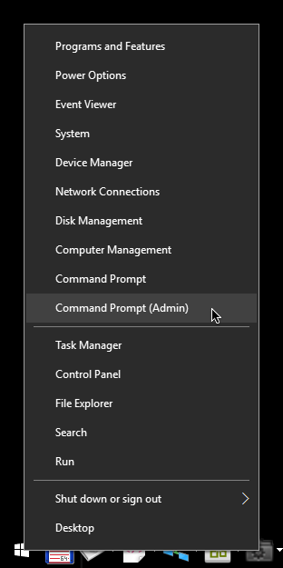
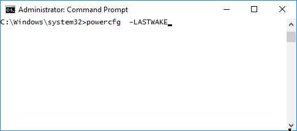
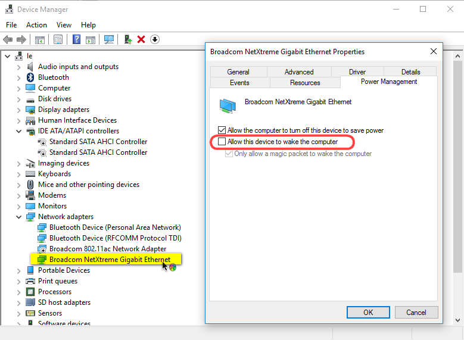

{kind=link}

Я редко выключаю компьютер, предпочитая ждущий и спящий режимы. Так я могу вечером отложить работу или игру и продолжить утром. Когда я только установил Windows 10, заметил, что по утрам компьютер оказывается включен, хотя отчётливо помнил, как выбирал ждущий режим. Ну всё! Теперь Microsoft будет следить за мной постоянно...подумал бы я, будучи каким-нибудь жёлтым журналистом. Но с компьютерами я работаю не первый день и знаю как работают ждущий и спящий режимы.
Поэтому предлагаю своё решение данной проблемы:
Первым долгом определяем от чего компьютер проснулся. Для этого заходим в командную строку с правами админа:

В консоли нужно написать powercfg -LASTWAKE
Это покажет какое именно устройство вызвало пробуждение в последний раз.
затем пишем POWERCFG -DEVICEQUERY wake_armed
Эта команда покажет все устройства, которые могут пробуждать компьютер. Обычно это мыши, клавиатуры и сетевые карты.
Запретить устройству пробуждать компьютер можно командой:
POWERCFG -DEVICEDISABLEWAKE "DEVICE-NAME"
в моём случае DEVICE-NAME - это Broadcom NetXtreme Gigabit Ethernet
Если уже известно, какое устройство выводит компьютер из спячки, то можно просто зайти в диспетчер устройств и отключить ему эту возможность:
Вот небольшой ролик о том как это сделать: